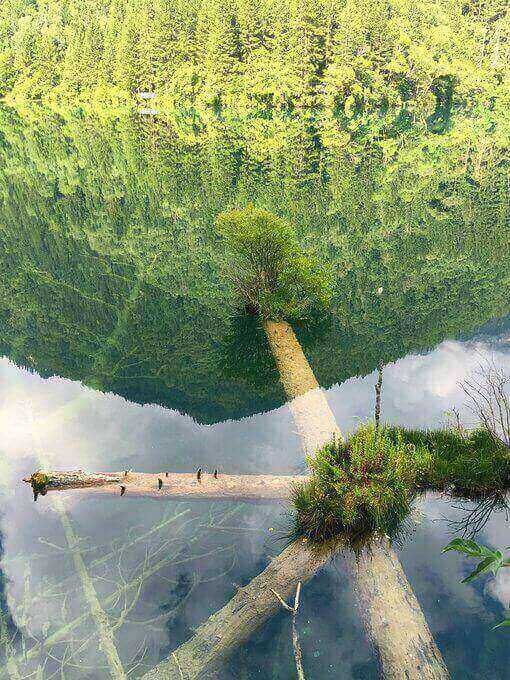
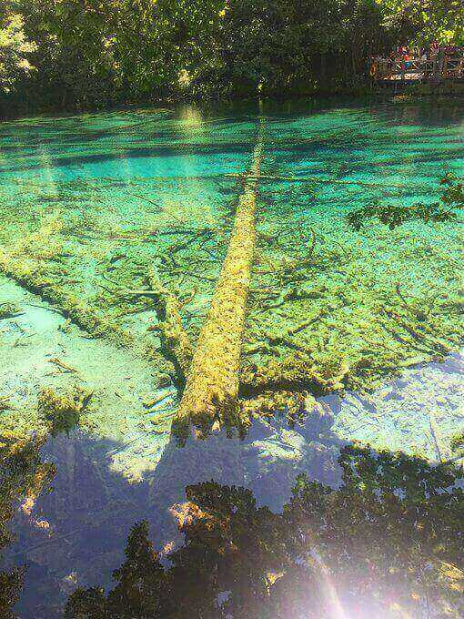
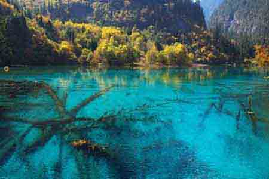
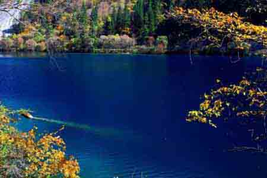

morly旅游圈
九寨沟国家级自然保护区主要保护对象是以大熊猫、金丝猴等珍稀动物及其自然生态环境。 区内高等植物中有74种国家保护的珍稀植物，其中国家一级保护植物有银杏、红豆杉和独叶草3种，二级保护植物66种，主要集中在兰科（43种），列入中国濒危植物红皮书的植物5种。 有国家一、二级保护动物18种，其中，一级4种、二级14种，代表种有大熊猫、川金丝猴等。包括保护区还有丰富的古生物化石，古冰川地貌十分发育。 九寨沟国家自然保护区是岷山山系大熊猫A种群的核心地和走廊带，具有典型的自然生态系统，为全国生物多样性保护的核心之一。动植物资源丰富，具有极高的生态保护、科学研究和美学旅游价值。 区内生物多样性丰富，物种珍稀性突出。九寨沟又是以高山湖泊群、瀑布、彩林、雪峰、蓝冰和藏族风情并称“九寨沟六绝”，被世人誉为“童话世界”，号称“水景之王”。 九寨沟还是以地质遗迹钙化湖泊、滩流、瀑布景观、岩溶水系统和森林生态系统为主要保护对象的国家地质公园，具有极高的科研价值。
九寨沟是水的世界，也是瀑布王国。所有的瀑布全都从密林里狂奔出来。这里有宽度居全国之冠的诺日朗瀑布，它在高高的翠岩上急泻倾挂，似巨幅品帘凌空飞落，雄浑壮丽。 有的瀑布从山岩上腾越呼啸，几经跌宕，形成叠瀑，似一群银龙竟跃，声若滚雪，激溅起无数小水珠，化作迷茫的水雾。 朝阳照射，常常出现奇丽的彩虹，使人赏心悦目，流连忘返。 被誉为九寨沟六绝之三的彩林，覆盖了景区一半以上的面积，2000余种植物，争奇斗艳，林中奇花异草，色彩绚丽，沐浴在朦胧迷离的雾霭中的孓遗植物，浓绿阴森，神秘莫测，林地上积满厚厚的苔藓，散落着鸟兽的翎毛。 充满着原始气息的森林风貌，使人产生一种浩渺幽远的世外天地之感。3万顷莽莽苍苍的原始森林，随着季节的变化，呈现出种种奇丽风貌。
九寨沟又是以高山湖泊群、瀑布、彩林、雪峰、蓝冰和藏族风情并称“九寨沟六绝”，被世人誉为“童话世界”，号称“水景之王”。
内容整理至网络，如有侵权，请联系我们！1255394075@qq.com
   